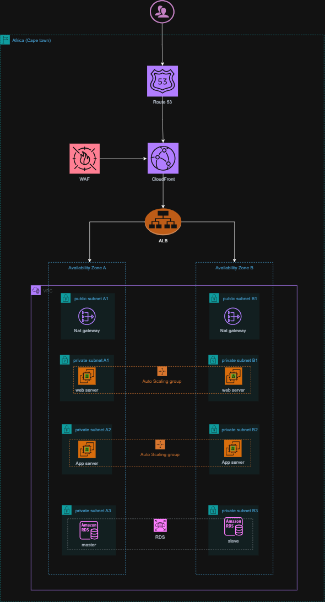

AWS 3-Tier Web Application
The problem. I wanted to understand how a 3-tier architecture actually works in production — not the diagram version, the operational one: what each layer does, how traffic moves through it, and what breaks it.
What I did. I designed and deployed the full stack myself: Route 53 for DNS resolution, a WAF in front to filter malicious traffic such as SQL injection attempts, an Application Load Balancer distributing traffic across two Availability Zones, web and application tiers behind it, a NAT Gateway translating private to public IPs for outbound traffic, and an autoscaling group to handle load. The AZ split was deliberate: the ALB runs continuous health checks, and if one AZ fails, traffic routes to healthy instances automatically, without manual intervention. I documented the full design and am still testing it further — removing individual components to observe exactly how the system degrades and recovers.
What came of it. A working, documented architecture with a tested failover path, published as a technical write-up. I understand this system well enough to explain every decision in it, not just operate it.
